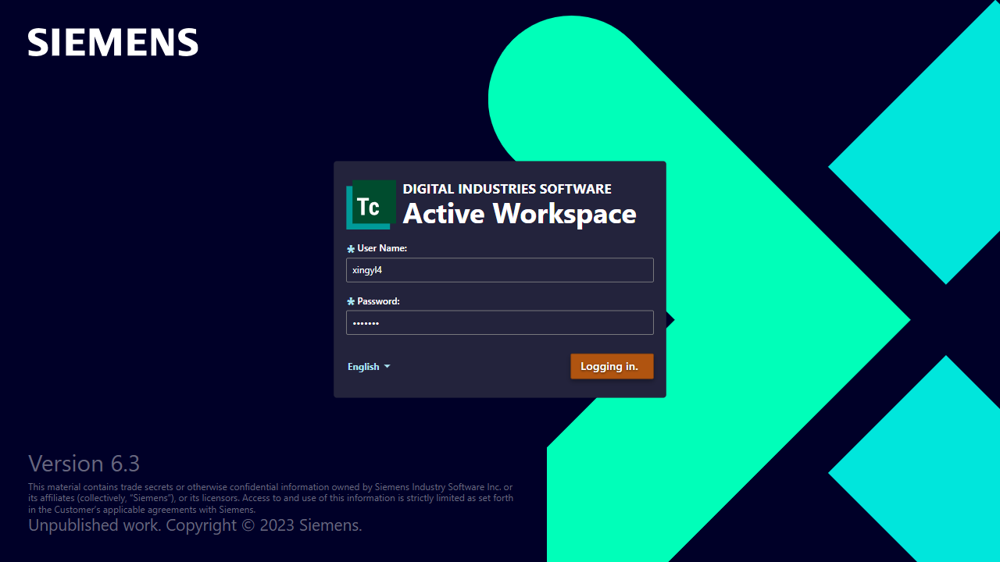
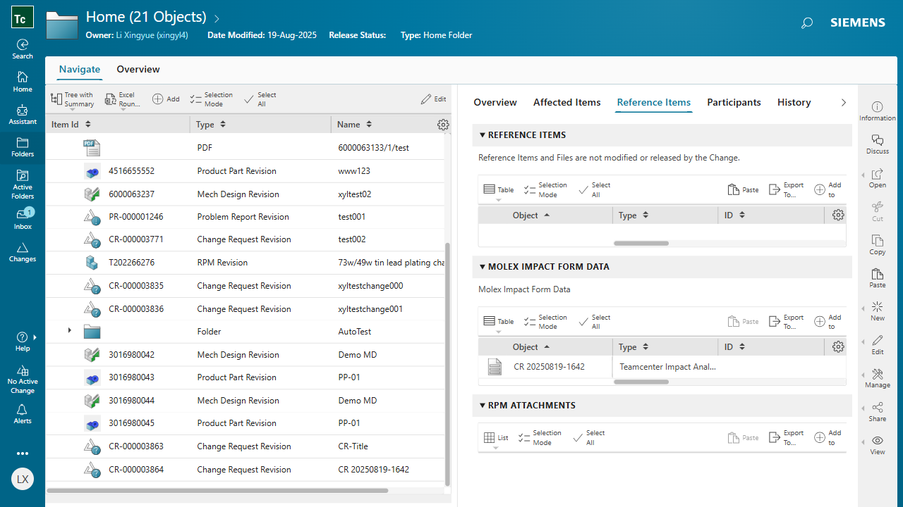
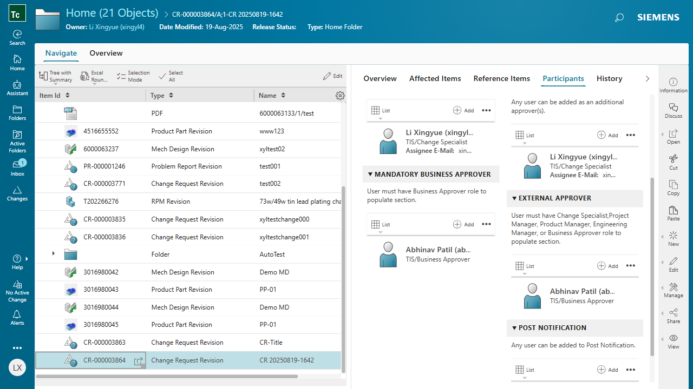

Run Report
Flow: demo-pipeline Generated: 8/19/2025, 4:45:44 PM
PASSED
login
2025-08-19T08:42:48.027Z → 2025-08-19T08:42:53.128Z
{
"username": "xingyl4"
}

PASSED
createChange1
2025-08-19T08:42:53.252Z → 2025-08-19T08:43:43.284Z
{
"CR_number": "CR-000003864"
}

FAILED
submitFromCR
2025-08-19T08:43:43.599Z → 2025-08-19T08:45:44.470Z
page.waitForSelector: Timeout 30000ms exceeded.
Call log:
�[2m - waiting for locator('.sw-tab-title[aria-label="Participants"]') to be visible�[22m
at submitWorkflow (C:\document\AutoTest\tc-flow-framework-v4.2\src\steps\step-submit-workflow.ts:13:16)
at async runStep (C:\document\AutoTest\tc-flow-framework-v4.2\src\core\flow.ts:66:10)
at async withRetry (C:\document\AutoTest\tc-flow-framework-v4.2\src\core\retry.ts:12:14)
at async runFlow (C:\document\AutoTest\tc-flow-framework-v4.2\src\core\flow.ts:203:24)
at async <anonymous> (C:\document\AutoTest\tc-flow-framework-v4.2\src\main.ts:9:3)
